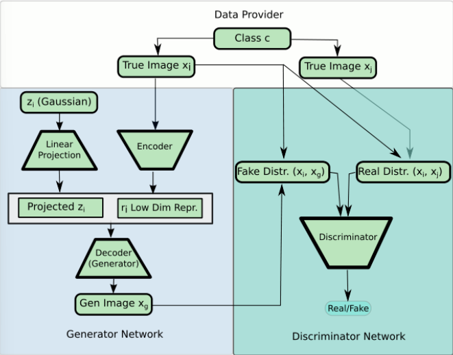
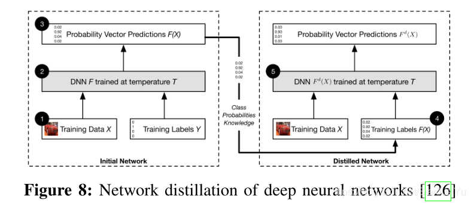
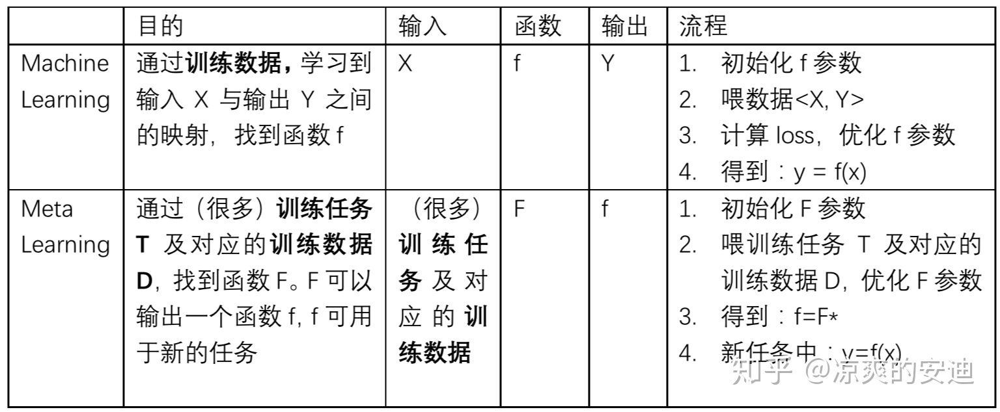
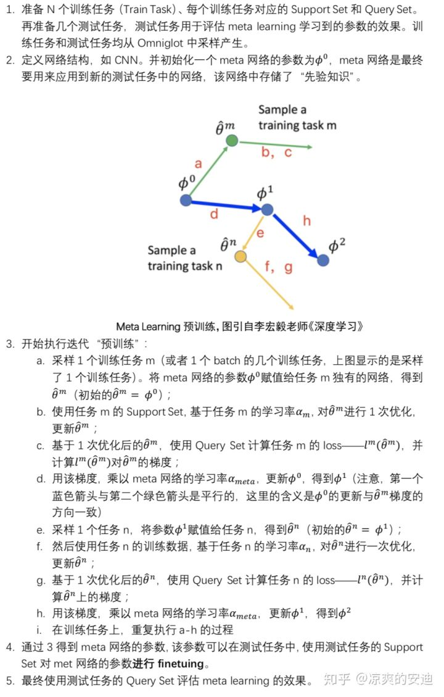
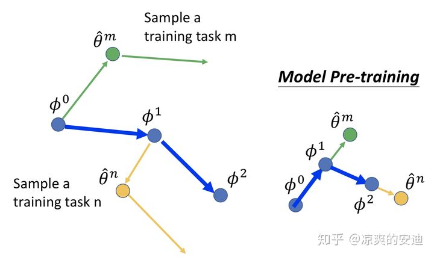
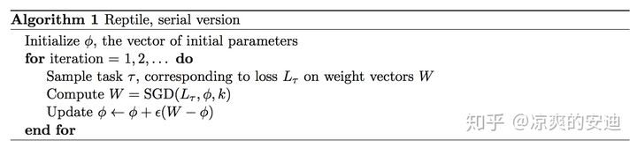
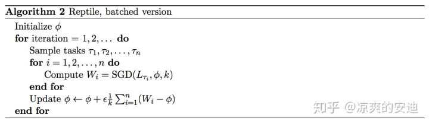

生成对抗网络小样本数据增强
在GAN框架中，学习过程是两个网络之间的极大极小博弈，一个生成器，生成给定随机噪声向量的合成数据，一个鉴别器，区分真实数据和生成器的合成数据。在监督学习中提高分类器性能的数据增强。
小样本学习：如果我们有一个非常少的样本，是一个更大数据集的子集，这种情况被称为少样本学习，这被证明是使用GANs进行数据增强的一个更有前途的用例。要解决这个问题，我们需要在GAN模型中包含类信息。
我们可以使用conditional GAN来实现这一点，在这个GAN中，类信息被提供给生成器。基于CGAN提出了很多变体：
近期数据增强网络：
ACGAN: Cooperate on classification
称为ACGAN(辅助分类器GAN)，除了区分真实数据和合成数据之外，还让鉴别器执行分类，损失函数包括用于分类的二元交叉熵项。除了学习生成总体真实的样本，这样还鼓励生成器学习不同类别样本的表示。这本质上是多任务学习。虽然生成器和鉴别器在生成的图像是真还是假上“竞争”，但他们在正确分类上“合作”。
DAGAN: learn a shared family of transformations for data augmentation
另一种变体叫做DAGAN (Data augmented GAN)，它学习如何使用真实图像的低维表示来生成合成图像。在DAGAN框架中，生成器不是将一个类和噪声向量作为输入，而是本质上是一个自动编码器：它将现有的图像进行编码，添加噪声，然后解码。因此，解码器学习了大量的数据增强转换。
DAGAN鉴别器一方面区分图像和变换后的版本（真伪），另一方面区分来自同一类的一对图像（真假）。因此，鉴别器激励解码器学习变换，这些变换不会改变类，但在变换后的图像需要与原始图像不太相似这一点上是不容易做到的。然而，DAGAN的一个关键假设是，相同的变换适用于所有类别 —— 这在计算机视觉环境中是合理的，但在欺诈或异常检测中就不那么合理了。
DAGAN的模型：左侧是生成网络，编码器->加随机噪声向量->解码器->生成假图片

BAGAN: learning to balance imbalanced data
在另一个conditional GAN的变体，称为BAGAN，自动编码器也用于生成器。自动编码器被预训练来学习整个数据集的分布。然后，对编码后的图像进行多元正态分布拟合。现在你可以从这些多元正态分布中采样，并将conditional 隐向量传递给生成器。与DAGAN不同，BAGAN为你提供了一个成熟的条件生成器，而不是对现有数据进行转换。它也可能比ACGAN在少量的背景下更好，因为VAE在拟合每个类的正态分布之前有学习整体分布的能力。
数据增强的问题：
当数据量较大时，对于我们下游神经网络而言，不在需要GAN扩充样本的情况下，也可以很好的支持网络训练，相比于使用GAN，还不如利用简单的数据增强方式（缩放、旋转、加噪声、遮挡等）来扩充样本量来的容易；当数据中等时，利用GAN进行生成样本，来扩充数据集，似乎可以有助于下游神经网络的训练收敛。
对抗样本误导抑制
对抗样本：对抗样本是敌手设计导致深度学习模型产生错误的输入。经过训练的神经网络模型f可以将原始输入样本x正确分类为标签l，敌手对原始输入样本添加扰动η，使原始输入样本x成为对抗样本x"，其中，x"=x+η。
对抗样本的生成方法
生成对抗样本的方法包括三个维度的分类：威胁模型（Thread model）、扰动（perturbation）、基准（benchwork）。
威胁模型
Adversarial Falsification：假正例攻击、假反例攻击
假正例攻击是生成一个反例，让模型误认为正例
假反例攻击是生成一个正例，让模型误认为反例
Adversary‘s Knowledge：黑盒攻击、白盒攻击
白盒攻击假定攻击者可以完全访问他们正在攻击的神经网络模型的结构和参数，包括训练数据，模型结构，超参数情况，层的数目，激活函数，模型权重等。
黑盒攻击假定攻击者不能访问他们正在攻击的神经网络模型的结构和参数，只知道模型的输出（label or condidnece）。白盒攻击样本可以通过一些方法转换成黑盒攻击的方式
Adversarial Specificity：有目标攻击、无目标攻击
目标攻击是神经网络将生成的对抗样本分类成一个特定的类。
无目标攻击，只要神经网络判定的label与原label不同即认为攻击成功。无目标攻击中的对抗样本生成方式大致有两种，一为运行几个目标攻击，取最小的扰动的那一个为对抗样本；二为最小化正确的类的分类可能性。
Attack Frequency：单步攻击和迭代攻击
单步攻击，只需优化一次即可生成对抗样本
迭代攻击，迭代的进行优化来生成对抗样本。比单步攻击效果更好，但花费更多的计算时间。
选择攻击类的三种方法：
平均情况：从所有不正确类标中随机平均选择目标
最好情况：所有不正确类标中选择最不困难攻击的类标
最坏情况：选择最难攻击的类标
扰动
Perturbation scope：个体攻击、普适性攻击
个体攻击对每一个不同的院士输入应用不同的扰动。
普适性攻击对整个数据集应用一个通用的扰动。
Perturbation limitation：优化扰动、普适性攻击
优化扰动把扰动作为优化问题的目标，减小扰动让人类无法分辨出来。
普适性攻击时将扰动作为优化问题的约束条件，只要足够小就行。
Perturbation measurement：lp measure、Psychometric perceptual adversarial similarity score（PSAA）
，计算对抗样本中该百年的像素数目，测量对抗样本中与原始样本的欧氏距离，测量所有样本中的最大像素改变值。
PASS是一种新的评价标准，符合人类的感知。
基准
数据集：MNIST、CIFAR-10、ImageNet，前两者简单且数目少，后者较好。
受害者模型：LeNet、VGG、AlexNet、GoogLeNet、CaffeNet、ResNet
对抗样本的迁移性
一部分对抗样本会在其他结构的神经网络上被错误分类，同时会被同一数据集不相交子集训练得到的网络错误分类。这一特性意味着深度学习模型普遍存在被黑盒攻击的风险。
对抗攻击方法
Szegedy等人，L-BFGS
使用来表示元素的变化量
上述问题难以求解，换成以下问题来求解：
表示扰动，另一种表达形式：
把图片映射成一个正实数，例如（交叉熵函数），线性搜索（二分）所有的c>0的情况。
Goodfellow等人，FGS或FGSM
使用来计算元素的该变量
在每一个像素上执行一步沿着梯度符号方向上的更新，扰动形式为：
然后，扰动是通过反向传播计算得到的。另一种表达形式：
作者发现，高维神经网络的线性部分无法抵抗对抗样本。因此，一些正则化可以被用于深度神经网络。且预训练不能够增加网络的鲁棒性。FGSM是一种无目标攻击。
改进的对抗攻击方法：
Fast Gradient Value method
Iterative Gradient Sign(Kurakin et al.):
效果比FGSM更好
One-step Target Class Method(OTCM)
动量的思想放入FGSM中，迭代生成对抗样本，每次迭代的梯度计算公式为：
对抗样本通过公式，引入动量提高了攻击的有效性，通过单步攻击和压缩方法提高了迁移性。拓展到了目标攻击，公式如下：
RAND-FGSM，作者发现由于gradient masking，FGSM对白盒攻击鲁棒性较好，所以提出了RAND-FGSM，在更新对抗样本时增加随机值来进行对抗样本的防御。公式如下：
这里为变量且。
感觉类似增加了一层外推操作
BIM(Basic Iterative Method)
考虑倒样本可能不能被直接传送到神经网络，对FGSM做了一个小小的改变，得到了一个更好的优化方法。每次迭代会限制像素值避免过大。
这里公式限制了对抗样本迭代的大小，对抗样本通过多次迭代产生：
ILLC(Iterative Least-Likely Class Method)
将BIM拓展到了目标攻击，使用与原始标签最不像的类作为目标，通过最大化交叉熵损失函数的方法来实现。
FGSM对光的鲁棒性更好，迭代性方法不能够抵挡光转化。
JSMA（Jacobian-based Saliency Map Attack）
计算了原始样本的雅可比矩阵：
F表示第2层到最后一层神经网络，发现x的输入特征对输出会有显著的影响。那么，一个被设计好的小的扰动就能够引起输出的较大改变，这样，一个小的特征的改变就能够欺骗神经网络。
然后，作者定义了两个对抗性的saliency maps来选择在每次迭代过程中被创建的特征\像素。他们实现了97%的攻击成功率，每个样本却只改变了4.02%的的输入特征。但是，由于计算Jacobian矩阵很慢，因此这个方法运行的太慢了。
Papernot等人，JSMA
基于距离矩阵，贪心算法，设定一个特点矩阵saliency map，评估每个像素点改变对于分类的影响程度。每次选择影响最大的进行修改，直到修改的太多或者成功改变了分类。定义：
尽可能提高目标分类，减小其他分类，叫做JSMA-Z，如果用最后一层的输出，就叫做JSMA-F。如果是彩色图片，每个通道单独计算加到一起。
Moosavi-dezfooli等人，Deepfool
无目标攻击，基于矩阵，比L-BFGS更好。想想神经网络完全线性，每个类被超平面分割，可以得到简化问题的理论界。由于不是完全线性，所以每次走一步，重复该过程，知道发现真正的对抗样本。
其余的一些方法：
Projected gradient descent：1步梯度下降后裁剪像素范围，但往往会降低方法的性能。例如动量迭代攻击。每一次的裁剪都扰乱了实际最优的下降方向。
Clipped gradient descent：直接朝着裁剪后的图像作优化，当图像的像素值达到了上边界或者下边界，对当前图像的优化就不再进行，因为梯度为0了！找一个连续但是没有边界的函数：。
就可以随便取值了：
对抗防御方法
对抗防御主要有两种方式，reactive和proactive。reactive：是在深度神经网络被构建之后检测对抗样本。proactive：在攻击者生成对抗样本前，让深度网络更鲁棒。在这一节，主要讨论了三种reactive的方法（Adversarial Detecting, Input Reconstruction, and Network Verificatio），三种proactive的方式（Network Distillation, Adversarial (Re)training, and Classifier Robustifying），以及一种emsembling method（集成方法）。
网络蒸馏（Distillation Network）

大网络先训练，将输出送到小网络中继续训练，从而将大网络的知识放到小网络中。由第一个DNN生成的类的概率被用来当作第二个DNN的输入。类的概率提取了第一个DNN学到的知识。Softmax通常是用来归一化DNN的最后一层，然后生成类的概率。第一个DNN的softmax输出是第二个DNN的输入，可以描述为：
T是控制知识蒸馏等级的临时变量。深度网络中T设置为1，T太大Softmax输出模糊，T太大，所有类概率趋近于1/m，T变小，只有一个类是1，剩下都是0。网络蒸馏可以提取深度网络的知识，并能够提高鲁棒性。作者发现攻击主要针对网络的敏感性，接着证明了使用high-temperature softmax可以降低模型的敏感度。网络蒸馏防御在MNIST和CIFAR-10上进行了测试，降低了JSMA攻击0.5%和5%的成功率。同时，蒸馏网络也提高了神经网络的泛化能力。
但有文章证明网络蒸馏并不能提高网络的鲁棒性，并提出了基于三种范数、、范数的对抗样本生成方法
对抗训练（adversarial training）
带着对抗样本训练，Goodfellow等人和Huang等人在训练阶段引入了对抗样本。他们在训练的每一步生成对抗样本，然后把他们加入到训练集中。对抗训练可以为神经网络提供正则化，并且提高了其准确率。
实验表明，对抗训练可以抵御单步攻击，但不能抵御迭代攻击。对抗训练只是被用来充当正则化手段来降低了过拟合。 而且，对抗训练对白盒攻击更加鲁棒。为了对付黑盒攻击，之后提出了Ensembling Adversarial Training method。
对抗识别（Adversarial Detecting）
训练了一个二分类网络作为检测器来辨别输入数据是合理的数据还是对抗样本。SafetyNet提取每个ReLU层输出的二值阈值作为对抗检测器的特征，并通过RBF-SVM分类器检测对抗图像。作者认为，即使对手知道检测器，他们的方法也很难被对手打败，因为对手很难找到一个最优值，无论是对对抗样本还是对SafetyNet检测器的新特征。
还有一种方法是增添了一个新的类别到原始模型中，模型能够将对抗样本分类成该类。他们发现，最大平均差（MMD）和能量距离（ED）的测量可以区分是对抗样本数据集还是干净的数据集。
还有一种方法，提供了检测对抗样本的贝叶斯视野。其表示，**对抗样本的不确定性比干净的数据更高。**因此，他们使用一个贝叶斯神经网络来平局输入数据的不确定性来区分对抗样本和干净的数据。
还有一种方法，是使用了**概率差（詹森-香农散度）**作为检测器之一。另一篇论文表明，在PCA后，对抗样本在低级别组件中有着不同的系数。
PixelCNN。对抗样本的分布与干净数据的分布是不同的。他们基于PixelCNN计算了p值，然后使用p值来检测对抗样本。结果表明，该方法可以检测FGSM,BIM,DeepFool，和C&W‘s attack。
有一篇论文，训练了一个具有”reverse cross-entropy”的神经网络，发现它能够更好的从干净数据中辨别出对抗样本，然后使用一种叫做Kernel density的方法检测对抗样本。“reverse cross-entropy”可以让深度网络以比较高置信度预测出正确的类，在其他类上由统一的分布。通过这种方式，深层神经网络被训练来将干净的输入映射到softmax之前的层中的低维流形。这为进一步检测对抗样本提供了极大的便利。
强化学习领域，有一篇论文，利用了大量的先前输入的图片来预测未来的输入并检测对抗样本。这些方法在损失函数稍有变化的情况下，无法抵抗C&W’s Attack
元学习
元学习是机器学习的子领域，自动学习算法应用于机器学习实验的元数据。主要目标是使用此类元数据来理解自动学习如何在解决学习问题方面变得灵活，从而提高现有学习算法的性能或学习（诱导）学习算法本身。简单来说：Learn to learn
使用不同的元数据，比如学习问题的属性、算法属性（比如性能度量），或者从之前的数据中获得的模式，选择、组合不同的算法来解决一个给定的问题。元学习和元启发式学习有很强的关联性。
元学习系统的定义结合了三个要求：
（1）系统必须包括一个学习子系统。
（2）在单个数据集的上一个学习片段中，或来自不同的领域，提取的元知识获得经验.
（3）学习偏差必须动态选择。
灵活性：
机器学习的算法都基于一个关于数据的假设，叫做感应偏差。这意味着只有当偏见与学习问题相匹配时，它才会学好。学习算法在一个领域可能表现良好，但在下一个领域表现不佳。这对机器学习或数据挖掘技术的使用构成了强有力的限制，因为学习问题（通常是某种数据库）与不同学习算法的有效性之间的关系尚不为人所知。
（就是说算法某些数据上好，另一些数据上不好）
偏差
- 偏差是指影响解释性假设选择的假设而不是偏见-差异困境中所表现的偏见概念。元学习涉及学习偏差的两个方面。
- 声明性偏差指定假设空间的表示，并影响搜索空间的大小（例如，仅使用线性函数表示假设）。
- 程序偏见对诱导性假设的顺序施加了限制（例如，更喜欢较小的假设）。
元学习与机器学习的区别：

在机器学习中，训练单位是一条数据，通过数据来对模型进行优化；数据可以分为训练集、测试集和验证集。在元学习中，训练单位分层级了，第一层训练单位是任务，也就是说，元学习中要准备许多任务来进行学习，第二层训练单位才是每个任务对应的数据。
机器学习中的参数、网络结构、更新步骤都是由人为控制的，元学习希望网络结构、参数初始化、优化器由机器自行设计。
元学习包含许多任务，分为训练任务和测试任务，每个任务包含自己的训练数据和测试数据，分别称之为Support Set和Query Set。测试任务用于评估meta learning学习到的参数效果。
MAML算法
目的是获得一组更好的模型初始化参数，让模型自己初始化。通过许多N-ways，K-shot的任务进行元学习的训练，使模型具备“先验知识”（初始化的参数），这个“先验知识”可以在新的N-ways、K-shot任务上表现得很好。
MAML算法流程：

基本思想，meta网络参数依次用不同任务进行参数更新，可以每次取一个任务或者1个batch的几个任务（如果用1个batch的几个任务就需要使用所有任务的梯度之和），得到预训练的网络参数，新来数据集后可以用meta网络参数来进行finetuing。（MAML中meta网络与子网络的结构必须完全相同）
问题1：MAML的执行过程与网络预训练和迁移学习有什么区别？
MAML的损失函数为，模型与训练的损失函数为。二者区别在于，meta learning的Loss是基于子网络的参数更新一步后计算的Loss，然后计算梯度更新meta网络，model pretraining的Loss是预训练模型的参数计算的Loss。

- MAML是使用子任务的参数，第二次更新的gradient的方向来更新参数（所以左图，第一个蓝色箭头的方向与第二个绿色箭头的方向平行；左图第二个蓝色箭头的方向与第二个橘色箭头的方向平行）
- 而model pretraining是使用子任务第一步更新的gradient的方向来更新参数(子任务的梯度往哪个方向走，model的参数就往哪个方向走)。
从sense上直观理解：
model pretraining最小化当前的model（只有一个）在所有任务上的loss，所以model pretraining希望找到一个在所有任务（实际情况往往是大多数任务）上都表现较好的一个初始化参数，这个参数要在多数任务上当前表现较好。
meta learning最小化每一个子任务训练一步之后，第二次计算出的loss，用第二步的gradient更新meta网络，这代表了什么呢？子任务从【状态0】，到【状态1】，我们希望状态1的loss小，说明meta learning更care的是初始化参数未来的潜力。
问题2.更新训练网络时候只走了一步，然后更新meta网络，为什么是1步？
因为只更新一步速度比较快，meta learning中子任务有很多，都更新很多次速度比较慢。
MAML希望得到的初始化参数在心得任务中finetuning时候效果好，如果只更新一次，就可以在新任务上获取较好的表现。（更新多次就有些倾向于当前任务了）
初始化参数应用到具体任务中，可以finetuning很多次。
Few-shot learning往往数据较少。
应该也可以更新多次后更新meta网络，更新次数决定了当前任务对meta网络影响的程度。

Reptile算法


Reptile不再计算梯度，可以更新多次，直接用一个参数来乘训练任务与meta网络参数之差来更新meta参数。
效果与MAML基本持平